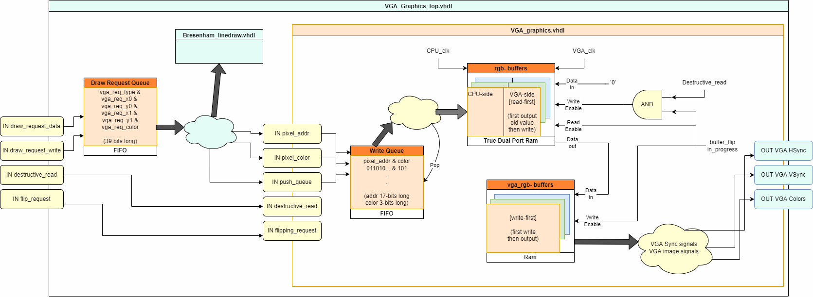

FPGA VGA Graphics Controller
About
In this project I created a double buffered VGA graphics design using an Xilinx Spartan-7 series FPGA board. The FPGA board that I have has enough memory for a 1-bit colored 320x240 pixel image. All the code was written and tested in Xilinx Vivado using VHDL language.
FPGA board is hooked up as shown below. One end of VGA cable was cut and jumper wires were soldered to the ends of the wires.

My targets for this project were to have double buffered graphics and simple interface to the top module. The controller was to be able to set individual pixels, draw lines and swap buffers with or without clearing the old buffer.
Double buffering is done in non-conventional way. The VGA Controller has two buffers, one for drawing (rgb-buff) and one for displaying (vga-buff). The drawing buffer is True Dual Port Ram meaning that it has two sides, each in different clock domain, which can be accessed and written to independently. The display buffer is a single side, i.e., ordinary Ram memory. When "swapping buffers", or flipping as I call it in this project, the content of rgb-buffer is copied to the vga-buffer. When flipping with destructive_read_req, zeros are written to rgb-buff while copying the contents to vga-buff.
Every draw request goes through write queue (FIFO) inside the VGA Graphics controller. This way the requests can be queued up for the VGA Controller so that VGA Controller can process them when ready. This queue is processed when VGA controller is currently not flipping. This takes away for any other part of the system (e.g. CPU) the need to wait for the VGA Controller to finish processing the request. Only when requesting to swap buffers, the CPU has to wait for the VGA Controller to finish processing old drawing requests. The need for waiting is best explained by the following example: CPU is in a loop where it requests to draw a long line and immediately requests to swap buffers. In this case CPU is requesting lines and flips faster than the VGA Controller can process them. This leads to anomalies, such as undefined end result on the screen.
Individual pixels are set by pushing the target pixel location along with the color to the FIFO of the VGA Graphics Controller.
Lines are drawn using Bresenham's line algorithm. The algorithm chosen as it does not require any division. Requests for lines are created by pushing the start and end points of the line along with the color to the FIFO of the VGA Graphics Controller.
Putting it together
After line- and pixel drawing worked independently, they were combined into single module. This module has another FIFO queue (Draw Request Queue) that takes drawing requests, either pixel or line requests. Format of the data (vga_req_fifo_din) is following:
- (38 downto 37) --- type (pixel="00" and line="01")
- (36 downto 28) --- x0 (Used for pixel requests x coordinate)
- (27 downto 20) --- y0 (Used for pixel requests y coordinate)
- (19 downto 11) --- x1
- (10 downto 3) ---- y1
- (2 downto 0) ----- color
I used 2-bit type for possible expansion of the functionality. For example, sprite drawing from memory, x0 and y0 could be used for location to draw sprite to and x1, y1 and color could be used as memory location from where to start drawing sprite. Sprite end could have specific binary value to indicate end of sprite. This type of drawing would mean that even if the sprite has large bounding box, it only takes up space in memory by the amount of non-zero pixels.
Below is also the top module entity of the VGA_Graphics_top.vhdl. It met the criteria of having simple interface to the top module. The next step would be to create simple CPU and connect this graphics module to it.
entity VGA_Graphics_top is
Port (
-- Inputs
fpga_clk : in STD_LOGIC; -- synthesizing VGA clk
cpu_clk : in STD_LOGIC;
flip_req : in STD_LOGIC; -- MUST BE PULSE
destructive_read_req : in STD_LOGIC; -- flip and clear rgb_buff
vga_req_fifo_din : in STD_LOGIC_VECTOR(38 DOWNTO 0);
vga_req_fifo_wr_en : in STD_LOGIC;
-- Outputs
flip_in_progress_out : out STD_LOGIC;
Colors : out STD_LOGIC_VECTOR(2 downto 0);
HSync : out STD_LOGIC;
VSync : out STD_LOGIC
);
end VGA_Graphics_top;